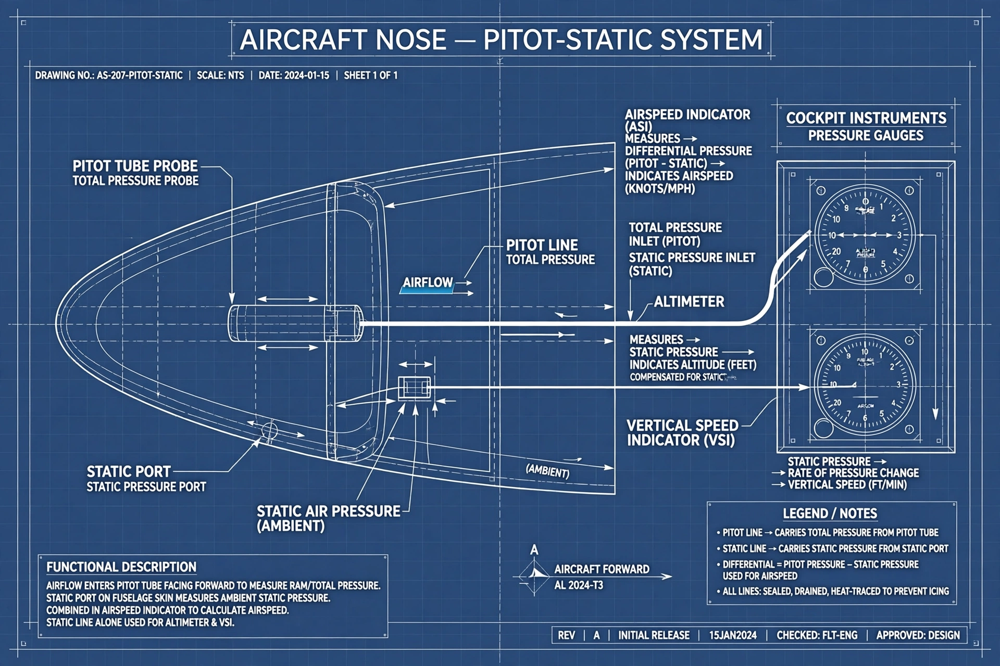

| Components | Pitot tube, static port, lines |
| Instruments fed | Airspeed indicator, altimeter, vertical speed indicator |
| Measures | Total pressure, static pressure |
| Named after | Henri Pitot (1695–1771) |

A pitot-static system is a system of pressure-sensitive instruments used in aviation to determine an aircraft's airspeed, Mach number, altitude and altitude trend (vertical speed). It combines a pitot tube, which measures total (stagnation) pressure, with one or more static ports, which measure the undisturbed ambient (static) pressure.
The pitot tube points directly into the airflow; the pressure it senses equals static pressure plus dynamic pressure (½ρv²). Subtracting the static pressure gives dynamic pressure, from which indicated airspeed is derived using Bernoulli's principle. The altimeter is an aneroid barometer referenced to static pressure, and the vertical speed indicator senses the rate of change of static pressure through a calibrated leak.
Blockages are the classic hazard. A blocked pitot tube (from icing, insects or forgotten covers) corrupts airspeed indications; a blocked static port freezes the altimeter and vertical speed indicator. Icing of pitot probes was a contributing factor in several accidents, including Air France Flight 447 (2009), in which ice crystals temporarily obstructed the pitot tubes, leading to inconsistent airspeed readings and autopilot disconnection. Position error, caused by airflow disturbance around the static ports, is corrected with calibration tables. Pitot covers marked "remove before flight" and pre-flight checks guard against ground contamination.